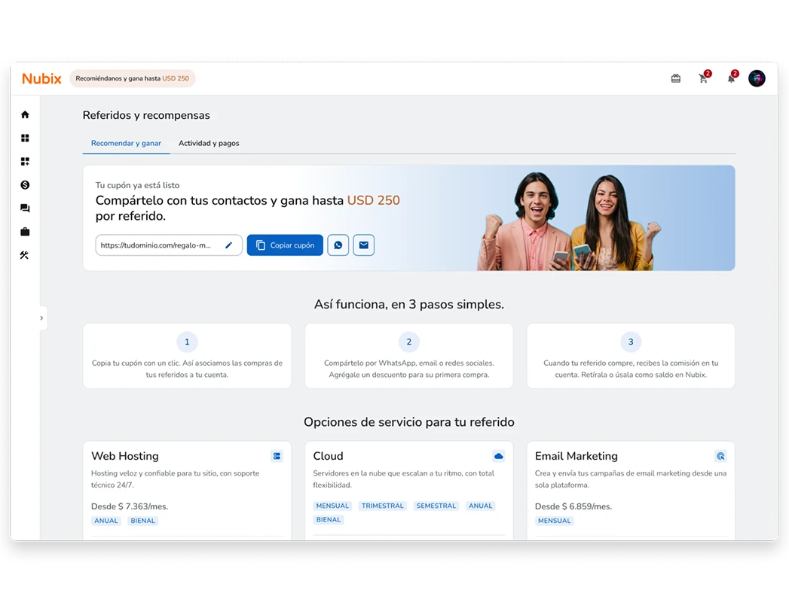

Referidos
Programa de referidos para un panel de clientes
Convertí la recomendación de boca en boca de una empresa de hosting en un programa de referidos para once países, con recompensa en dólares, una espera antifraude de 45 días y un historial que la vuelve visible.

Por un acuerdo de confidencialidad no menciono el nombre real de la empresa ni del producto. Las capturas son adaptaciones de lo que existe en producción.
En pocas palabras
Una gran parte de los clientes llegaba por recomendación de boca en boca, sin incentivo, sin beneficio visible y sin forma de rastrearla. El pedido de armar un programa de referidos vino de arriba, con una intención de negocio clara pero con las definiciones concretas completándose sobre la marcha. Con el Lean Canvas y el Value Proposition Canvas encontré el obstáculo real: la ausencia de un incentivo tangible y universal.
El caso lo resuelve en cuatro decisiones: una recompensa en dólares para los once países, un programa que se encuentra y se explica solo, una espera de 45 días que se ve en lugar de esconderse y un link único con un cupón editable. Todo se puede probar en el prototipo en código, en desktop y mobile.
Qué hice yo
Diseñé la sección completa de Referidos: el flujo, las reglas que ve el usuario y las pantallas desktop y mobile. Fui completando las definiciones que faltaban sentándome con el analista de negocio.
Con inteligencia artificial
Usé inteligencia artificial en el relevamiento del código, el armado de componentes, la tokenización, el prototipado en código y los arreglos de usabilidad, entre otras tareas. Todo fue validado por mí.
Con quién trabajé
- 1 diseñador (yo)
- Product Owner
- Líder de desarrollo
- Analista de negocio
- QA
El diseño en cuatro cifras
-
11
Países, una sola moneda
La recompensa es en dólares: un valor percibido único, sin variantes de localización.
Incentivo -
3
Pasos para empezar
Copiar el cupón, compartirlo y cobrar la comisión, explicados en tres tarjetas sin jerga.
Visibilidad -
45
Días de espera, a la vista
La comisión se habilita 45 días después de la primera compra, y la fecha exacta está en la tabla.
Espera de 45 días -
6
Estados de una comisión
Pendiente, disponible, retenido, solicitado, pagado y cancelado, cada uno con su color y su nota.
Espera de 45 días
Cifras del diseño final, según el prototipo en código y el handoff.
Para quién
Quien refiere y quien recibe
Esta experiencia la viven dos personas distintas, pero la interfaz le habla solo a quien refiere, nunca a quien recibe la invitación. Matías opera dentro del panel. Valentina llega por su link: no usa esta pantalla, pero lo que vive en su primera compra decide si el programa funciona.
Matías R.
Freelance developer
Rol: invitador
“Recomendaría Nubix si me rinden algo a cambio. Yo ya sé que es bueno, ¿por qué hacerlo gratis?”
Objetivos
- Reducir su gasto mensual usando la comisión como saldo.
- Ser referente tech en su círculo.
- Ayudar a sus colegas a empezar con algo confiable.
- Generar comisión para su próxima renovación.
Frustraciones
- No saber si el referido usó el cupón ni cuándo cobra.
- Procesos con código manual o formularios aparte.
- No poder personalizar el cupón sin perder el historial.
- Recomendar sin recibir nada a cambio.
Insight clave
La incertidumbre sobre cuándo cobra le genera desconfianza. Personalizar el cupón es para él un gesto de identidad, y entra al programa con un objetivo concreto.
Valentina S.
Emprendedora
Rol: invitada
“Mi amigo me dijo que era confiable y eso me alcanzó. Solo necesito que sea fácil de entender.”
Objetivos
- Publicar su tienda online.
- Entender qué paga.
- Tener soporte accesible.
- No gastar de más en su primer mes.
- Confiar en haber elegido bien.
Frustraciones
- La jerga técnica.
- No saber si el descuento del cupón se aplicó.
- Miedo a que la tarjeta se use mal.
- Un onboarding sin guía.
Insight clave
La decisión ya viene tomada: el aval de su contacto reemplaza la investigación. Cualquier fricción en los primeros pasos rompe la confianza prestada.
Decisión 1 de 4
Un incentivo universal para once países
Armé el Lean Canvas y el Value Proposition Canvas, y mostraron que lo que faltaba era un incentivo tangible y universal. De las charlas con los analistas y el Product Owner salió la conclusión: una recompensa en moneda local implicaba once variantes de localización, mientras que en dólares el valor percibido se unifica y la volatilidad cambiaria queda resuelta de un plumazo.
El Lean Canvas, en una pantalla
El invitador es el único actor que opera dentro de la plataforma; el invitado llega al sitio por su link.
Problema
- Clientes existentes
- Sin incentivo económico para recomendar. Recomiendan informalmente, sin trazabilidad ni recompensa.
- Nubix
- Alto costo de adquisición, sin canal estructurado de referidos. Sección “Afiliados” enterrada y sin uso.
- Nuevos clientes
- Baja confianza en marcas sin aval social. Sin beneficio por llegar vía recomendación.
Propuesta de valor
Recomendá Nubix.
Ganá en dólares.
Cada cliente satisfecho se convierte en un canal de adquisición activo. El invitador gana comisiones en USD canjeables como saldo. El invitado llega con respaldo social y descuento real en su primera compra. Beneficio mutuo, medible y trazable desde Nubix.
Segmentos
- Early adopters
- Clientes con +1 año, satisfechos y cómodos con la tecnología.
- Invitador
- Cliente activo que quiere monetizar su red. Único actor que interactúa con el programa dentro del panel.
- Invitado
- Emprendedor o freelancer que llega vía link al sitio de Nubix. No usa el panel en esta etapa.
- Mercado
- Base instalada LATAM (AR, MX, CL, CO, PE y más).
Solución
- Sección en Nubix con cupón único auto-generado, editable sin perder historial.
- Botón para compartir en un clic.
- Vista previa del programa para quienes no tienen servicios activos, como incentivo a contratar.
- Comisión en USD disponible 45 días después de la primera compra.
- Historial por estados y cobro a saldo Nubix.
Ventaja especial
- Base de clientes activos con historial de pago verificado.
- Confianza de marca de 20+ años en LATAM.
- Política antifraude de 45 días: diferencial frente a programas sin validación.
- Comisión aplicable como saldo a cualquier producto del portfolio.
Canales
- WhatsApp y redes sociales.
- Email directo.
- Pill en el dashboard de Nubix.
- Header visible desde el primer ingreso.
- Email marketing transaccional.
Métricas
- Tasa de adopción del cupón.
- Ratio cupón compartido → conversión.
- Tiempo promedio hasta el primer cobro.
- Comisión total distribuida (USD).
- Costo de adquisición: referido vs. canal pago.
- Volumen mensual de comisiones acreditadas.
Estructura de costos
- Comisión variable por conversión validada.
- Desarrollo e integración (costo hundido, ya ejecutado).
- Procesamiento de pagos y transferencias de canje.
- Gestión del historial de comisiones.
- Soporte al cliente ante dudas del programa.
Impacto en el negocio
- Clientes referidos con mayor valor a lo largo del tiempo.
- Nuevas suscripciones atribuibles al programa.
- Activación de clientes dormidos vía incentivo económico.
- Quienes refieren son clientes más leales y conformes con el producto.
- Efecto compuesto: red de referidos que crece orgánicamente.
Del dolor al alivio
Lo que sale de cruzar los dolores de quien refiere con lo que entrega el producto, según el Value Proposition Canvas.
DolorRecomendar sin recibir nada a cambio, o sin un beneficio trazable.
AlivioUna comisión real en USD, acreditable como saldo en cualquier servicio.
DolorNo saber si el referido usó el cupón ni cuándo cobra.
AlivioUna tabla con estados y fechas: se ve si compró y cuándo se cobra.
DolorProcesos opacos y plazos escondidos en los términos y condiciones.
AlivioLa comisión se habilita a los 45 días, sin formularios aparte, y el plazo está a la vista.
DolorMúltiples pasos o links distintos para compartir según el servicio.
AlivioUn enlace único global: no hay que elegir link según el servicio.
Quien refiere
Una comisión que se ve y se puede nombrar
Comisión en USD cobrable como saldo en Nubix o por transferencia en moneda local. Un cupón con nombre propio, la fecha de uso y la de disponibilidad visibles, y el estado de cada referido y el total disponible a simple vista.
Quien recibe
Respaldo social y un descuento concreto
Llega con el aval de alguien en quien confía y un descuento real en su primera compra. La propuesta cierra así: el invitador ya confía en Nubix y quiere compartir esa confianza.
La decisión
Pagar la recompensa en dólares en los once países. En moneda local había once variantes de localización y un valor percibido distinto en cada mercado; en dólares el valor es el mismo para todos y la comisión se cobra como saldo en cualquier servicio, o por transferencia convertida a moneda local al momento del pago. El costo es que el diseño tiene que explicar el dólar y sus límites, el tope de USD 250 y el mínimo de cobro de USD 30, a la vista en el hero y en la barra de progreso.
Decisión 2 de 4
Un programa que se encuentra y se explica solo
Con los perfiles claros miré cómo lo resuelven DigitalOcean, SiteGround y Hostinger: dónde ponen el programa, qué tan bien lo explican, qué tan fácil es compartir el link y cómo manejan el fraude. Ninguno resuelve bien el primer paso: a DigitalOcean hay que ir a buscarlo y SiteGround lo trata como función secundaria. La política antifraude es lo más fuerte de los tres, pero SiteGround la esconde en los legales, un lugar poco accesible.
Cómo lo resuelven tres programas, y cómo lo resolvimos
Relevamiento propio de DigitalOcean, SiteGround y Hostinger. La última columna es el diseño final.
| Criterio | DigitalOcean | SiteGround | Hostinger | Nubix |
|---|---|---|---|---|
| Dónde aparece | Escondido en el menú de perfil. | Pestaña secundaria en la navegación principal. | Badge destacado en el dashboard. | Chip en el header, visible desde el primer ingreso. |
| Explica de qué se trata | No: asume que ya sabés. | Sí, con tres pasos. | Sí, con tres pasos y estadísticas globales. | Sí, con tres pasos y estadísticas globales. |
| Facilidad para compartir | Un solo link. | Modelo mixto, varios links. | Modelo mixto: obliga a elegir el servicio primero. | Un solo link y un cupón, siempre el mismo. |
| Cómo previene el fraude | Retiene hasta que el referido gaste más de USD 25. | Retiene 30 días. | Retiene 45 días. | Retiene 45 días, con la fecha a la vista en la tabla. |
Se encuentra: un chip en el header
Desde cualquier pantalla, sin tener que ir a buscarlo al menú del perfil.
Con el sistema · el panel con el chip
Con el sistema · el panel con el chip
Se explica: tres pasos y lo que se gana con cada servicio
La pantalla no asume que ya sabés cómo funciona un programa de referidos.
Con el sistema · sin servicio activo
Con el sistema · sin servicio activo
La decisión
Que el programa se encuentre desde cualquier pantalla y se explique solo. Un chip en el header en lugar de un lugar escondido en el menú del perfil, y tres pasos con la recompensa de cada servicio en lugar de asumir que la persona sabe cómo funciona un programa de referidos. Y la regla antifraude, que en los otros programas queda en los términos, se muestra como parte de la pantalla.
Decisión 3 de 4
La espera de 45 días, a la vista
El flujo no salió armado de punta a punta: arrancó básico (quien refiere entra, agarra su link y lo comparte) y se fue complicando a medida que las reglas de negocio se completaban sobre la marcha. La parte más delicada la definió una charla con el analista de negocio: “¿cuánto tarda en hacerse efectivo esto? Cuarenta y cinco días… ¿y qué mostramos mientras tanto?”. Ahí quedó claro que el peor momento para quien refiere es la espera obligatoria por seguridad antifraude, porque si el sistema queda en silencio la persona interpreta que algo salió mal.
El recorrido de quien refiere, de punta a punta
Catorce pasos, desde que entra a su cuenta hasta que el saldo se acredita. Dos de ellos pasan fuera del producto.
- Matías entra al panel
- Ve el chip de referidos en el header
- Hace clic en el chip
- Entra a Referidos y recompensas
- Ve su hero con el cupón activado
- Lee las condiciones y los servicios elegibles
- Copia el link
- Lo comparte con su contacto
- El contacto contrata un servicio
- Ve la comisión en Pendiente
- Pasan 45 días y el servicio sigue activo
- La comisión pasa a Disponible
- Solicita el cobro a saldo en Nubix
- Su saldo se acredita
- Inicio
- Pantalla del producto
- Acción de Matías
- Fuera del producto
- Resultado
Los seis estados de una comisión
Cada comisión sigue este camino. Los colores son los mismos que ve quien refiere en la tabla.
- Un referido usa el cupón y la comisión queda pendiente, esperando los 45 días.
- Pendiente: pasados los 45 días, pasa a disponible. Si se reembolsa la compra dentro del período, pasa a cancelado y termina.
- Disponible: suma al saldo cobrable. Si se pide el cobro, pasa a solicitado; si el saldo está en el tope de USD 250, pasa a retenido.
- Retenido: se libera y vuelve a disponible cuando se cobra.
- Solicitado: el cobro está en curso; cuando se acredita, pasa a pagado y termina.
Pendiente
Un referido usó el cupón y la comisión espera los 45 días.
Sigue: Disponible o Cancelado.
Disponible
Pasaron los 45 días y la comisión suma al saldo que se puede cobrar.
Sigue: Solicitado o Retenido.
Retenido
El saldo ya está en el tope de USD 250. La tabla lo aclara: “Se libera al cobrar”.
Sigue: Disponible, cuando se cobra.
Solicitado
Se pidió el cobro y está en curso.
Sigue: Pagado.
Pagado
El cobro se acreditó.
Es un estado final.
Cancelado
La compra se reembolsó dentro del período. La tabla lo aclara: “Compra reembolsada”.
Es un estado final.
La tabla de actividad, con la fecha exacta
Cada fila muestra el estado y “Disponible desde”: la fecha en que se usó el cupón más 45 días.
Con el sistema · actividad de referidos
Con el sistema · actividad de referidos
La decisión
Mostrar la espera en lugar de explicarla en los legales. Cada comisión muestra su estado y la fecha exacta en que se habilita, con seis estados de color y, donde hace falta, una nota: “Se libera al cobrar”, “Compra reembolsada”. Así la espera de 45 días no se lee como un error, y la regla antifraude pasa a ser parte de la pantalla y no de los términos y condiciones, que es donde la competencia la deja.
Decisión 4 de 4
Un link, un cupón editable y una salida a soporte
Compartir tenía que ser lo más simple posible, sin elegir a quién invitar ni armar un mensaje desde cero: un solo link, siempre el mismo, que el sistema cruza con la compra por atrás. Con la edición del cupón me pasó lo que vi en el benchmark: Hostinger le pone un cartel de advertencia a quien cambia su link y genera ansiedad de más, así que acá el sistema apaga el cupón anterior y crea uno nuevo sin perder el historial, para personalizar el código sin miedo a romper nada.
Tres momentos de la misma pantalla
El hero cambia según lo que la persona tiene: sin servicios, con un servicio y sin cupón, o con el cupón ya generado.
Sin servicio activo
Servicio activo, sin cupón
Cupón listo
El cupón y el cobro, con los errores a la vista
Las reglas del cupón se dicen antes de escribir, y cada error explica cómo corregirlo. Son los modales del prototipo en código.
- Prefijo fijo “regalo-”
- De 6 a 15 caracteres: letras minúsculas y números
- Único en todo el programa
- El anterior deja de funcionar; el historial queda
Formato inválido
Cupón ya en uso
Retiro de comisiones
Dos formas de cobrar
Las transferencias bancarias internacionales quedaron afuera de la primera versión por su complejidad operativa y regulatoria.
Dentro del producto
Cobrar como saldo en Nubix
Un modal “Retiro de comisiones” para revisar y confirmar. Una vez confirmado no se puede cancelar. Se habilita al llegar al mínimo de USD 30.
Fuera de la primera versión
Cobrar por transferencia bancaria
Deriva a la mesa de ayuda. Sirve de salida para comisiones grandes y registra cuánta gente la pide, el dato que falta para justificar sumarla después. La conversión a moneda local se hace al momento del pago.
El recorrido completo del programa
Desde el chip del header hasta el cobro, con los desvíos: el cupón inválido y el saldo por debajo del mínimo.
- Pantalla o resultado
- Pestaña
- Decisión
- Acción de quien refiere
- Modal o aviso
- Desde el dashboard, el chip del header lleva a Referidos y recompensas, que tiene dos pestañas.
- Recomendar y ganar: sin servicio activo, la pantalla invita a contratar y lleva al flujo de compra. Con servicio activo, muestra el hero con el cupón y el bloque para compartir.
- Con el cupón: se copia (aviso “Link copiado”) o se cambia desde un modal. Si el cupón no es válido, el error aparece en línea y se corrige; si lo es, el hero muestra el cupón nuevo.
- Actividad y pagos: con menos de USD 30 los botones de cobro quedan deshabilitados. Con el mínimo, se cobra como saldo (modal de confirmación) o por transferencia, que deriva a la mesa de ayuda.
- Siempre visibles: la actividad de referidos y los movimientos de cobros, con su estado vacío.
La decisión
Un solo link, un cupón con nombre propio y una salida a soporte. El cupón se edita sin perder el historial de comisiones: el anterior deja de funcionar, pero lo ganado queda, así que personalizarlo no da miedo. Y el cobro por transferencia, que quedó fuera de la primera versión, no desaparece: deriva a la mesa de ayuda y suma un dato nuevo, cuánta gente lo pide.
Cómo trabajé
Alcance
Diseñé la sección completa de Referidos: el chip del header, la pantalla de recomendar y ganar, la actividad y los cobros, y los modales del cupón y del retiro, en desktop y mobile. Las transferencias bancarias internacionales quedaron afuera de la primera versión y se derivan a soporte.
Evidencia
Casi cuatro años de tickets de la mesa de ayuda me dejaron ver qué tipo de cliente usaba la plataforma, y de ahí armé los dos perfiles. Después trabajé con el Lean Canvas y el Value Proposition Canvas, el benchmark de DigitalOcean, SiteGround y Hostinger, y las charlas con los analistas y el Product Owner.
Cómo avanzó
Trabajé dos meses con un equipo de 9 a 12 personas. Mi contacto directo era el analista de negocio, el líder de desarrollo y QA, y parte de las decisiones llegaban ya cerradas a través del Product Owner. Las reglas de negocio se fueron completando sobre la marcha, y el flujo con ellas.
Estado real
El programa se entregó en fecha y quedó funcionando en producción. No volvió a aparecer en un pedido de cambio.
Qué se mide
Desde el Lean Canvas quedó definido qué medir: la tasa de adopción del cupón, cuántos cupones compartidos terminan en una compra, cuánto tarda el primer cobro, cuánta comisión se distribuye, cuánto cuesta un cliente referido frente a uno de un canal pago y el volumen mensual de comisiones acreditadas.
Lo que aprendí
“A veces el hallazgo más importante sale de sentarse con la persona correcta y hacer la pregunta obvia que nadie se había hecho todavía.”
El proceso real casi nunca se parece al que uno arma para explicarlo después: no hubo un pedido claro ni una investigación corrida de punta a punta, sino un pedido de negocio incompleto y criterio armado sobre la marcha. Eso no reemplaza tener un proceso, pero me dejó claro que la rigurosidad pasa por ir a buscar evidencia donde esté.